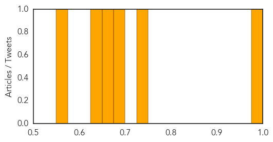
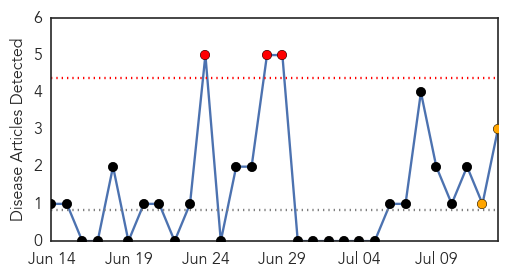

Measles
30-Day Web Trend
2 alerts, 3 warnings

30-Day Twitter Trend
0 alerts, 0 warnings
Article Locations

Article Confidences
Top Articles:
- 0.994
- Deadly disease outbreak in KZN ‘under control’
- 0.726
- California’s Tough Vaccination Law
- 0.696
- Many physicians fail to routinely recommend vaccinations
- 0.653
- “The Measles Situation Is Under Control”
- 0.636
- Ahead of Yemen ceasefire, UNICEF sounds alarm about impact of crisis on children
- 0.560
- Dachel Media Update: NYT Praises CA for Taking Away Healthcare Rights
Top Tweets:
-
No tweets found for Jul 13, 2015
Pertussis
30-Day Web Trend
3 alerts, 2 warnings

30-Day Twitter Trend
0 alerts, 0 warnings

Article Locations
Article Confidences
Top Articles:
Top Tweets:
-
No tweets found for Jul 13, 2015